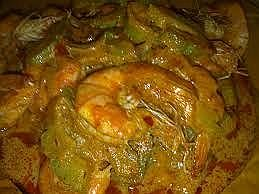

Sambal Santan Udang

Bahan
- 500 grm udang besar, dibuang misainya
- 2 lembar daun salam
- 125 cc air/santan encer
- 1 sdm air jeruk nipis
- 1 sdm irisan halus kulit jeruk
- sambal/limau
- 3 sdm minyak, untuk menumis
Bumbu yang dihaluskan:
- 7-8 buah cabai merah
- 8-10 buah cabai rawit (kalau suka pedas)
- 2 siung bawang putih
- 5 buah bawang merah
- ½ sdt kunyit, dicincang
- 1 sdt jahe, dicincang
- ½ sdt terasi
- 1 sdm irisan serai
- 1 sdt ketumbar, disangrai
- 1-2 sdt asam jawa
- 5 buah kemiri, disangrai/digoreng
- garam dan gula merah menurut selera
Cara Membuat:
- Remas-remas udang dengan air jeruk nipis, biarkan selama 10menit supaya meresap.
- Tumis bumbu dan daun salam dengan 3 sdm minyak di atas api sedang sampai harum, tuangi air/santan encer, didihkan. Masukkan udang. Masak sampai kuah mengental dan udang matang.
- Angkat dan hidangkan dengan ditaburi dengan bawang goreng dan irisan kulit jeruk sambal/jeruk limau.